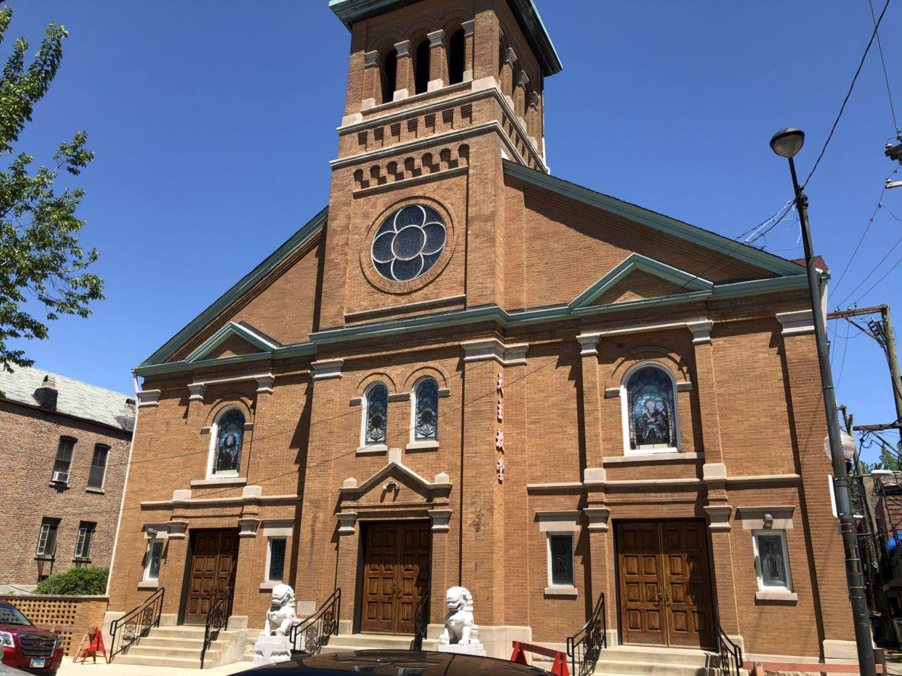

St. Therese Church
St. Therese Church incorporated a variety of cultural elements. The unique statues and stained-glass windows came from Italian culture. Since the church is used by Chinese, the parish’s main statement, which located on the keystone above the altar, is written in Chinese, the tablet to honor ancestors also in Chinese. Moreover, there is a pair of Chinese marble lions on both sides of its front door.
圣德力教堂
圣德力教堂融合了各种文化元素。独特的雕像和彩色玻璃窗来自意大利文化。由于教堂被中国人使用，在祭坛上方的基石上，教堂的主要陈述是用中文书写的，也有用汉字书写的祖先纪念碑。而且，它的前门两侧有一对中国大理石狮子。